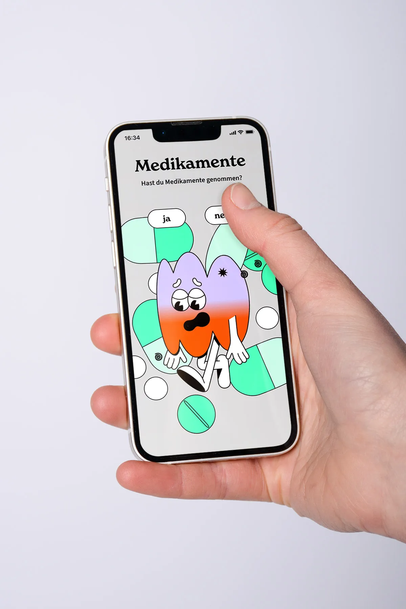
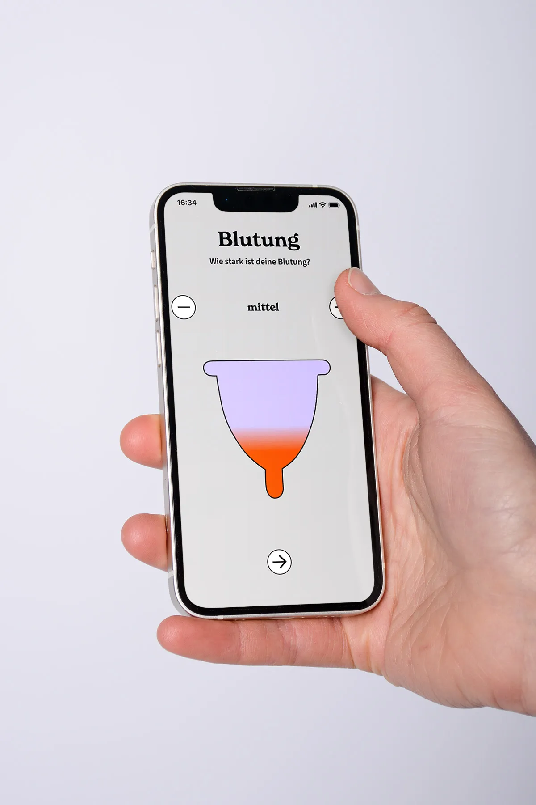
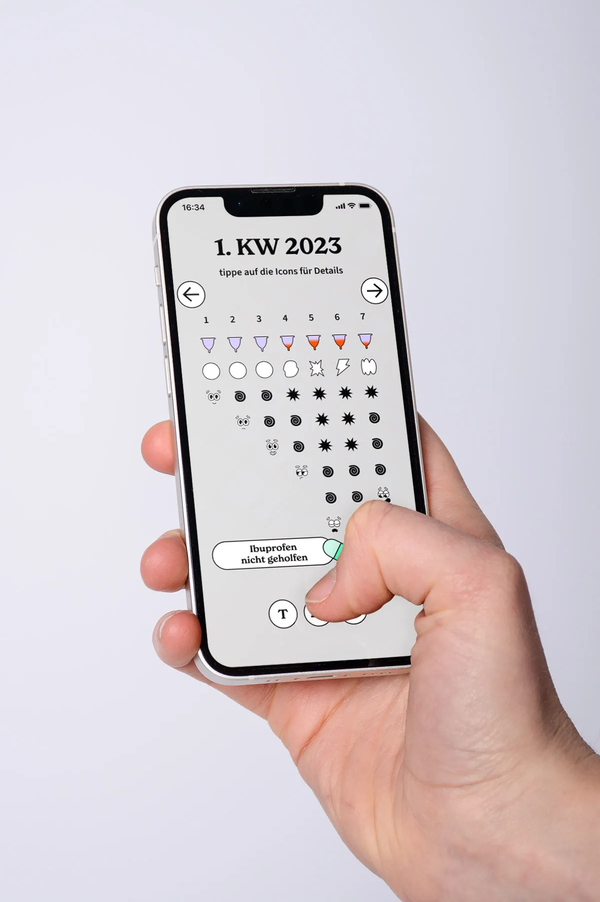
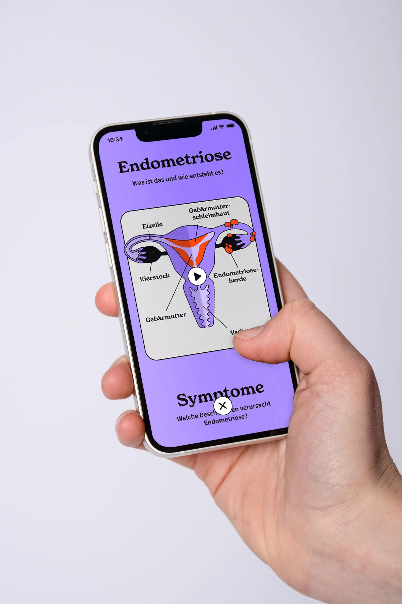
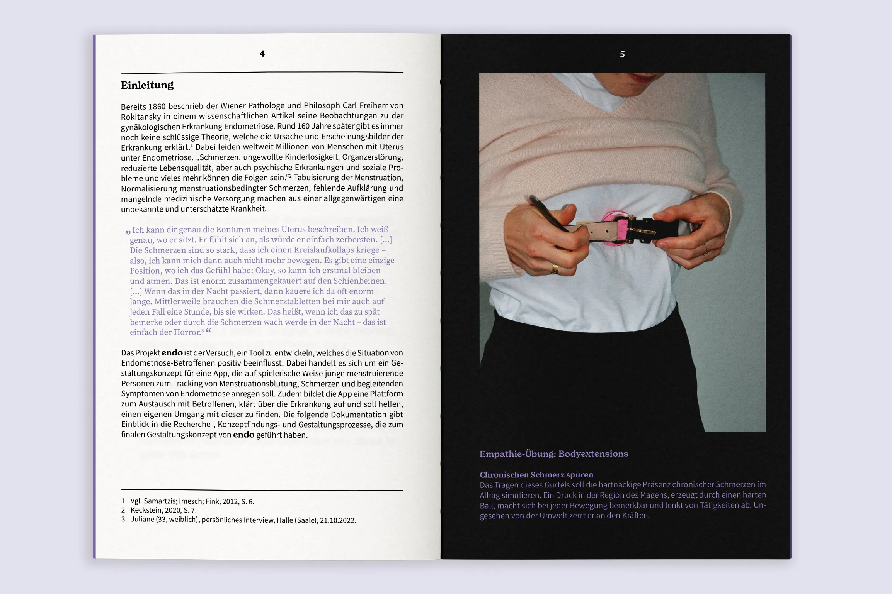
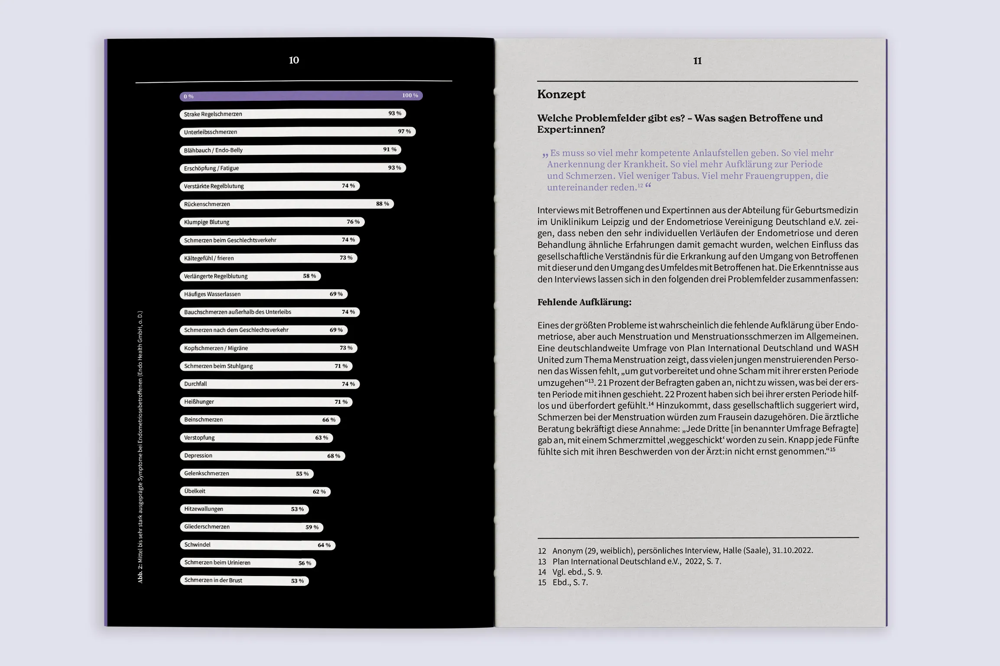
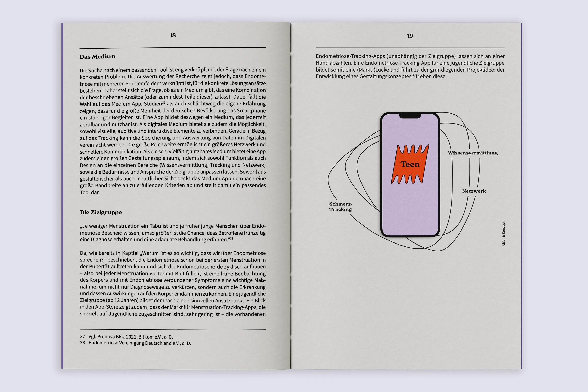
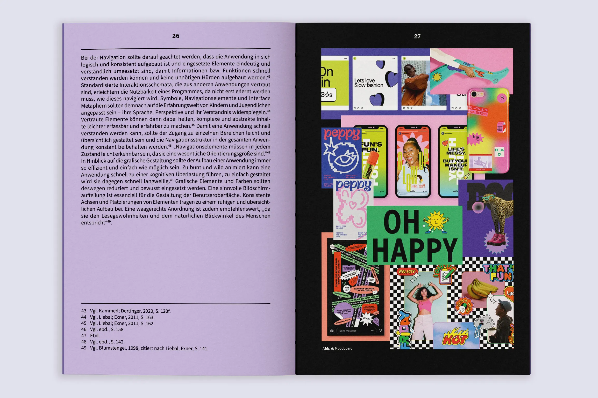

endo
endo ist ein Gestaltungskonzept für eine App, die junge menstruierende Menschen auf spielerische Weise dazu ermutigen soll, ihre Menstruationsblutung, Schmerzen und die begleitenden Symptome von Endometriose zu tracken. Das tägliche Festhalten des eigenen körperlichen und mentalen Wohlbefindens soll einen Überblick über das eigene Krankheitsbild schaffen und so den diagnostischen Prozess beschleunigen. Darüber hinaus dient die App als Plattform für den Austausch mit anderen Betroffenen, bietet Informationen zum Krankheitsbild und soll dabei helfen, einen eigenen Umgang damit zu finden.
App, UX/UI Design